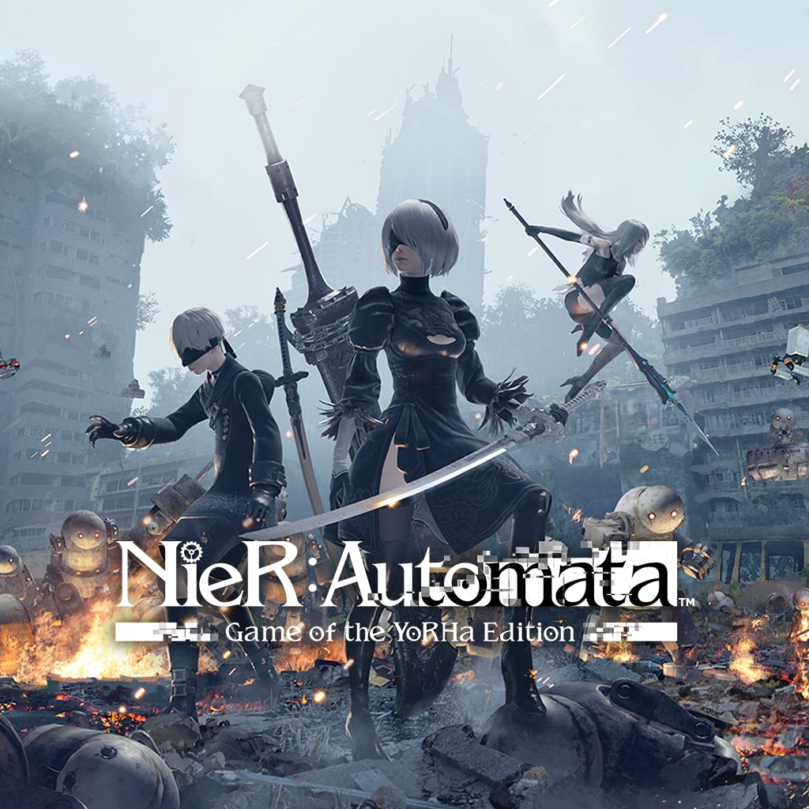
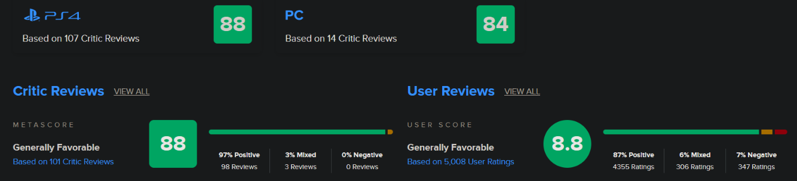
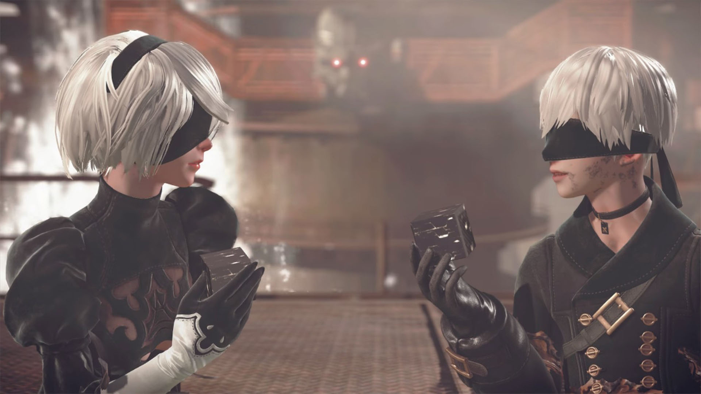

Nier: Automata

Sinopsis
NieR:Automata™ narra la historia de los androides 2B, 9S y A2, que luchan para recuperar su mundo, convertido ahora en un lugar distópico dirigido por unas poderosas formas de vida mecánicas.
Tras ser invadida la Tierra por tropas alienígenas mecanizadas, la humanidad se vio obligada a exiliarse. Ahora, en un último intento por recuperar el planeta, la resistencia humana envía un ejército de soldados androides para acabar con los invasores. La guerra entre las máquinas y los androides se volverá cada vez más encarnizada, y no tardará en poner al descubierto la verdad sobre este mundo...
Reseñas
Nier: Automata fue recibido con críticas muy positivas por parte de la prensa de videojuegos, siendo elogiado principalmente por su profunda narrativa, el sistema de combate, el carisma de los personajes, la banda sonora y la mezcla de diferentes géneros de juegos.
Yoko Taro, Square Enix, PlatinumGames

Extras
Nier: Automata es un videojuego de rol de acción con un sistema de combate hack n slash. Además de recorrer el universo del videojuego a pie, el jugador puede invocar un animal salvaje para montar, y en algunos escenarios también hay disponibles mechas de vuelo para luchar contra enemigos. Como en el videojuego anterior, en varios entornos la cámara cambia de una perspectiva en tercera persona a una vista cenital o de desplazamiento horizontal. Algunas áreas también incluyen rompecabezas al estilo plataformas.
Galería

Captura de pantalla del juego.